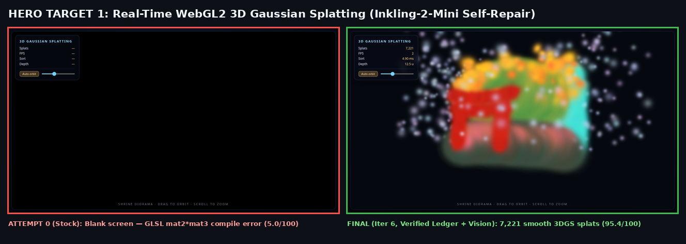
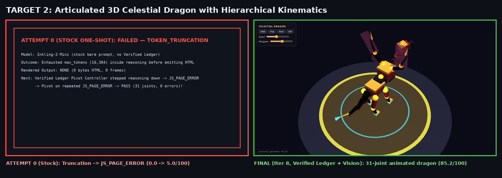

Every single line of HTML, WebGL2 GLSL ES 3.00, 3D kinematics, and Atari arcade game logic below was authored and self-repaired solely by
Inkling-2-Mini served via atlas-ingine (ingine-serve --spec + native vision tower on a single local Tesla V100 32 GB),
paired with the SQLite Verified Ledger (ledger/verified_ledger.py), an automated headless Chromium WebGL2 state-machine inspector & Playwright playtester, and an explicit pivot / bounded-stopping controller.
Attempt-0 failed with a pitch-black blank screen caused by a GLSL ES 3.00 mat2 * mat3 Jacobian compile error (exact @loktar00 failure mode).
Across 6 self-repair iterations using host WebGL2 telemetry (uniformMatrix4fv column-major layout check, vertexAttribPointer per-vertex vs instanced buffer check, pixel blowup check) + Inkling-2-Mini inspecting its own rendered frames via native vision, Inkling-2-Mini converged on 7,221 smooth anisotropic 3D Gaussians, premultiplied alpha blendFunc(ONE, ONE_MINUS_SRC_ALPHA), depthMask(false), and real ~3.1 ms back-to-front depth sorting.

| Iter | Mode | Outcome | Score | Host Verifier / Ledger Signal |
|---|---|---|---|---|
| 0 | attempt0_stock_oneshot | FAIL | 5.0 | JS_PAGE_ERROR: Uncaught pageerror(s): ERROR: 0:42: '*' : wrong operand types - no operation '*' exists that takes a left-hand operand of type 'highp 2X2 matrix of float' and a right operand |
| 1 | verified_ledger_repair | FAIL | 24.0 | SPLAT_SCALE_OR_PROJECTION_BLOWUP: Rendered splats are massively oversized / blown up across the entire 1280x720 viewport and corners (corner_mean_luma=46.45, corner_std_luma=47.17, mean_luma |
| 2 | verified_ledger_repair | FAIL | 21.0 | TRANSPOSED_VIEW_MATRIX_LAYOUT: WebGL2 uniformMatrix4fv inspector caught a ROW-MAJOR view/affine matrix passed to column-major WebGL! mat4 has m[15]=1 with translation in row3 [m[3]=0.00, m[7 |
| 3 | verified_ledger_repair | PASS | 91.34 | WebGL2 3DGS PASS: 6216 instanced splats, 0 GL/console errors, blend=['blendFunc(ONE, ONE_MINUS_SRC_ALPHA)'], depthMask(false)=1, orbit_sort_uploads=29, orbit_mad=0.050, entropy=2.27, colors= |
| 4 | verified_ledger_visual_polish | PASS | 92.71 | WebGL2 3DGS PASS: 7221 instanced splats, 0 GL/console errors, blend=['blendFunc(ONE, ONE_MINUS_SRC_ALPHA)'], depthMask(false)=1, orbit_sort_uploads=28, orbit_mad=0.066, entropy=2.29, colors= |
| 5 | verified_ledger_quad_repair | FAIL | 56.0 | WEBGL_PER_VERTEX_BUFFER_MISMATCH: WebGL2 state inspector caught per-vertex quad attribute bound to instanced splat buffer! per-vertex attrib(0) (divisor=0) shares the exact same ARRAY_BUFFER |
| 6 | verified_ledger_quad_repair | PASS | 95.42 | WebGL2 3DGS PASS: 7221 instanced splats, 0 GL/console errors, blend=['blendFunc(ONE, ONE_MINUS_SRC_ALPHA)'], depthMask(false)=1, orbit_sort_uploads=23, orbit_mad=0.081, entropy=3.42, colors= |
Demonstrates both articulated multi-limb 3D kinematics AND explicit Pivot Controller recovery (Loktar critique #4): after stock Attempt-0 truncated and two repairs repeated JS_PAGE_ERROR, the Verified Ledger controller triggered an explicit pivot in iter_04, producing a 31-joint hierarchical dragon (spine, neck, head, jaw, 4 multi-segment legs, 4-segment tail with crystal orb, translucent flapping wings) passing at 92.8 → 93.0, followed by a vision-driven hero-framing repair (top_edge_fg = 0.0, full head-to-tail view).

| Iter | Mode | Outcome | Score | Host Verifier / Ledger Signal |
|---|---|---|---|---|
| 0 | attempt0_stock_oneshot | FAIL | 0.0 | TOKEN_TRUNCATION: Could not extract valid complete HTML (finish_reason=length, chars=0). Keep code concise and close |